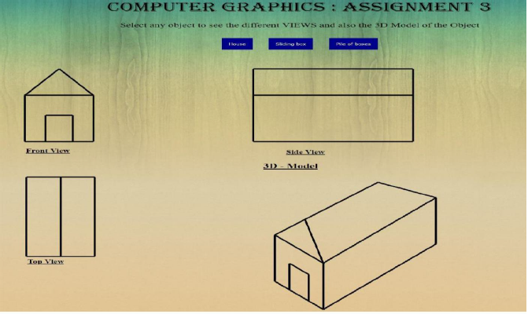
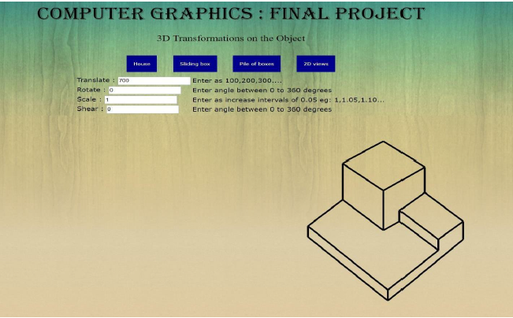
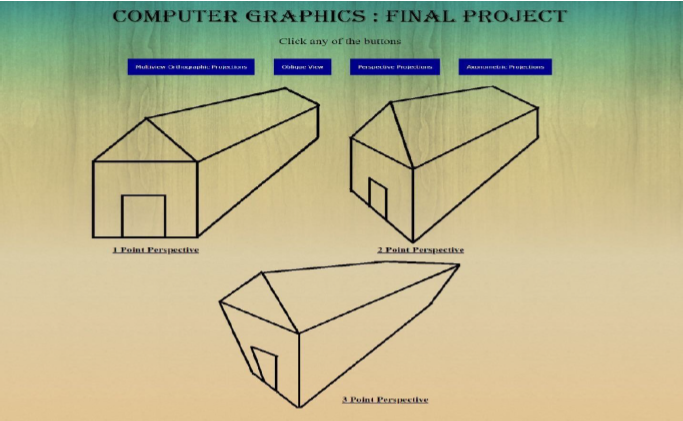
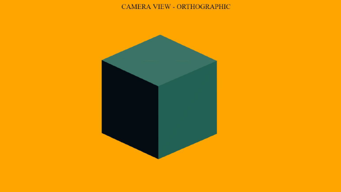
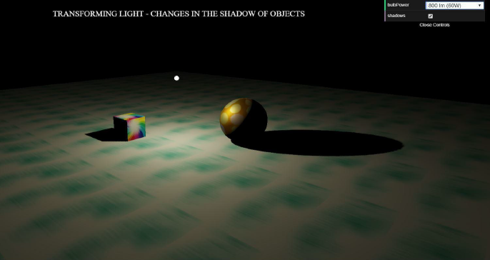
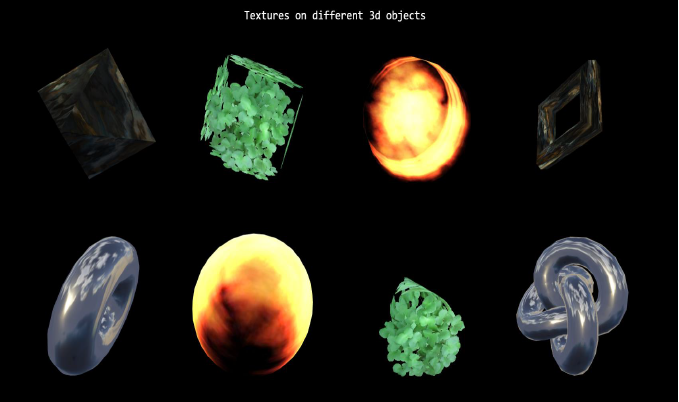
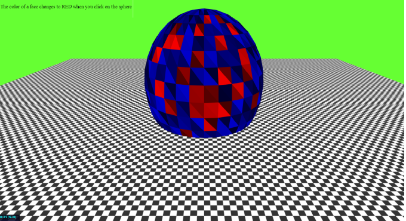
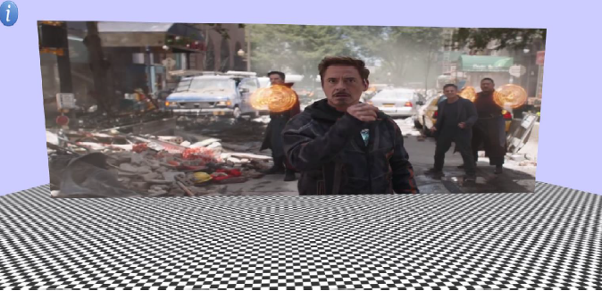

Final Project - Computer Graphics

2D Views

Transformations on 3D objects

Projections and Views

Orthographic View of Camera

Change in shadows of objects

Textures on objects

Customize Textures

Video on Textures